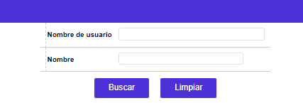
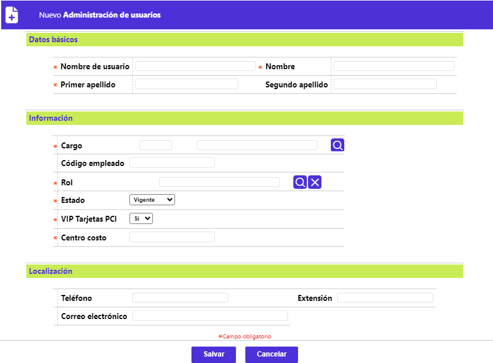
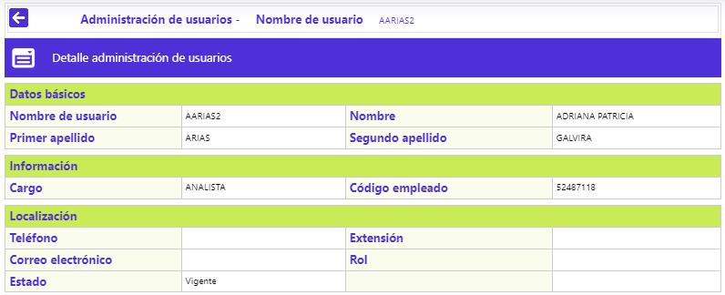
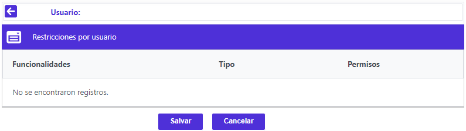

Administración de Usuarios
Desde este formulario, se habilita la consulta y mantenimiento de una tabla en la cual se almacena la información relacionada con los usuarios nombrados para la entidad financiera, lo cual requiere que, como medida de seguridad, el acceso a la misma sea altamente restringido. El formulario contiene las opciones Actualizar, Eliminar, Adicionar, Detalle y Restricciones.
El formulario cuenta con un filtro que permite efectuar consultar por el código y/o el nombre del usuario

El formulario cuenta con un filtro que permite efectuar consultar por: Nombre de usuario (del aplicativo) o por Nombre (del funcionario), este último puede ser primer o segundo nombre, si es por el segundo nombre, se debe usar el comodín %, antes del mismo:

Adicionar: Al invocar ese enlace se despliega un nuevo formulario dividido en varios bloques de datos: Básicos, Información y Localización, con los siguientes campos:
Descripción de Campos
|
Nombre de usuario |
Campo alfanumérico de 16 dígitos, obligatorio, en el que debe registrarse una abreviatura, un código o pseudónimo que permite identificar a cada usuario del Sistema. |
|
Nombre |
En este campo alfanumérico de 25 posiciones, obligatorio, se registra el(os) nombre(s) de la persona a quien corresponde el usuario a definir. |
|
Primer apellido |
Campo alfanumérico de 20 posiciones, obligatorio, en el que se registra el primer apellido del usuario nombrado. |
|
Segundo apellido |
En este campo alfanumérico de 20 posicione, no obligatorio, se registra el segundo apellido del usuario nombrado. |
|
Cargo |
Campo obligatorio con lista de valores de la que se debe seleccionar el cargo desempeñado por el usuario en la entidad. |
|
Código empleado |
En este campo alfanumérico de 16 dígitos, no obligatorio, se registra el código interno del funcionario o en su defecto el número de documento de identificación. |
|
Rol |
Campo que posee lista de valores adjunta de la que debe seleccionarse el rol al que pertenece el usuario del aplicativo que se está definiendo o modificando. |
|
Estado |
Campo obligatorio, posee lista de valores tipo combo, de la que debe seleccionarse entre: Vigente, Bloqueado o Inactivo, la situación del usuario del aplicativo. |
|
VIP Tarjetas PCI |
Campo obligatorio, posee lista de valores tipo combo, de la que debe seleccionarse entre: Si o No, al usuario le es habilitada la funcionalidad mediante la cual pueda visualizar en claro los números de las tarjetas. |
|
Centro costo |
Campo obligatorio que en máximo 14 enteros y 2 decimales, le permite a la entidad asignar el dato del centro de costos al cual está vinculado el funcionario a adicionar o modificar su información. |
|
Teléfono |
En este campo alfanumérico de 20 dígitos, no obligatorio, se registran los números telefónicos en los que es posible ubicar al usuario. |
|
Extensión |
Campo alfanumérico de 20 dígitos, no obligatorio, en el que se indican los números de extensión en los que es posible ubicar al usuario. |
|
Correo electrónico |
En este campo alfanumérico de 30 dígitos, no obligatorio, se registra la dirección electrónica a la que es posible enviar e-mails al usuario. Cuando se ejecutan procesos desde automatización, el sistema envía a esta dirección los mails en los que informa al usuario el resultado de la ejecución de los procesos lanzados por él. |
Actualizar: Al invocar ese enlace se despliega un formulario con un único campo no modificable: Nombre de usuario.
Detalle: Al invocar ese enlace se despliega un formulario con la información del registro y en el cual ninguno de sus datos es modificable:

Restricciones : Al invocar ese enlace se despliega un formulario que muestra el o los Roles de negocio a los cuales tiene acceso el usuario desde el cuál se invocó. Ésta maniobrabilidad tiene como propósito poder diferenciar los atributos entre usuarios que pertenezcan a un mismo rol; basta con navegar por los menús y submenús hasta ubicar la o las opciones que se requieran deshabilidar / habilitar o restringir / autorizar, para el usuario desde el cuál se invocó, condición dada por el estado del checkbox Permisos, que solo se habilitan para aquellos registros de tipo Funcionalidad; para poder evidenciar el cambio es necesario primero activar el botón especial Salvar y segundo que el usuario afectado, reingrese al aplicativo.
